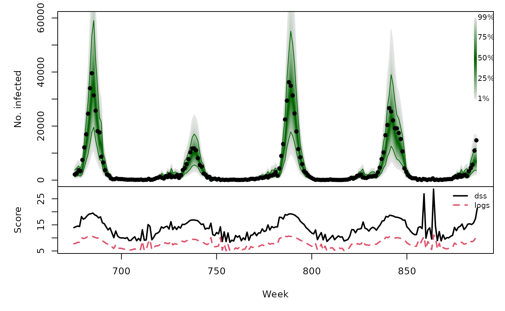

Forecasting Swiss ILI counts using surveillance::hhh4
Sebastian Meyer
2018-09-03
Source:vignettes/CHILI_hhh4.Rmd
CHILI_hhh4.Rmdlibrary("HIDDA.forecasting")
library("ggplot2")
source("setup.R", local = TRUE) # define test periods (OWA, TEST)In this vignette, we use forecasting methods provided by:
library("surveillance")Höhle M, Meyer S, Paul M (2018). surveillance: Temporal and Spatio-Temporal Modeling and Monitoring of Epidemic Phenomena. R package version 1.16.2, http://surveillance.R-Forge.R-project.org/.
Modelling
(weeksInYear <- table(year(CHILI.sts)))##
## 2000 2001 2002 2003 2004 2005 2006 2007 2008 2009 2010 2011 2012 2013 2014
## 52 52 52 52 53 52 52 52 52 53 52 52 52 52 52
## 2015 2016
## 53 52mean(weeksInYear)## [1] 52.17647## long-term average is 52.1775 weeks per year
f1 <- addSeason2formula(~ 1, period = 52.1775, timevar = "index")
## equivalent: f1 <- addSeason2formula(~ 1, period = 365.2425, timevar = "t")
hhh4fit <- hhh4(stsObj = CHILI.sts,
control = list(
ar = list(f = update(f1, ~. + christmas)),
end = list(f = f1),
family = "NegBin1",
data = list(index = 1:nrow(CHILI.sts),
christmas = as.integer(epochInYear(CHILI.sts) %in% 52))
))
summary(hhh4fit, maxEV = TRUE)##
## Call:
## hhh4(stsObj = CHILI.sts, control = list(ar = list(f = update(f1,
## ~. + christmas)), end = list(f = f1), family = "NegBin1",
## data = list(index = 1:nrow(CHILI.sts), christmas = as.integer(epochInYear(CHILI.sts) %in%
## 52))))
##
## Coefficients:
## Estimate Std. Error
## ar.1 -0.268537 0.032271
## ar.sin(2 * pi * index/52.1775) -0.151396 0.034288
## ar.cos(2 * pi * index/52.1775) 0.470040 0.041523
## ar.christmas -0.571221 0.126095
## end.1 5.329271 0.120100
## end.sin(2 * pi * index/52.1775) 0.305917 0.083900
## end.cos(2 * pi * index/52.1775) 0.540657 0.142518
## overdisp 0.191229 0.008983
##
## Epidemic dominant eigenvalue: 0.47 -- 1.25
##
## Log-likelihood: -6791.47
## AIC: 13598.93
## BIC: 13637.23
##
## Number of units: 1
## Number of time points: 886Alternatively, use a yearly varying frequency of 52 or 53 weeks for the sinusoidal time effects:
f1_varfreq <- ~ 1 + sin(2*pi*epochInYear/weeksInYear) + cos(2*pi*epochInYear/weeksInYear)
hhh4fit_varfreq <- update(hhh4fit,
ar = list(f = update(f1_varfreq, ~. + christmas)),
end = list(f = f1_varfreq),
data = list(epochInYear = epochInYear(CHILI.sts),
weeksInYear = rep(weeksInYear, weeksInYear)))
AIC(hhh4fit, hhh4fit_varfreq)## df AIC
## hhh4fit 8 13598.93
## hhh4fit_varfreq 8 13600.23plot(hhh4fit, pch = 20, names = "", ylab = "")
qplot(x = 1:53, y = drop(predict(hhh4fit, newSubset = 1:53, type = "ar.exppred")),
geom = "line", ylim = c(0,1.3), xlab = "week", ylab = expression(lambda[t])) +
geom_hline(yintercept = 1, lty = 2)
CHILIdat <- fortify(CHILI)
## add fitted mean and CI to CHILIdat
CHILIdat$hhh4upper <- CHILIdat$hhh4lower <- CHILIdat$hhh4fitted <- NA_real_
CHILIdat[hhh4fit$control$subset,"hhh4fitted"] <- fitted(hhh4fit)
CHILIdat[hhh4fit$control$subset,c("hhh4lower","hhh4upper")] <-
sapply(c(0.025, 0.975), function (p)
qnbinom(p, mu = fitted(hhh4fit),
size = exp(hhh4fit$coefficients[["-log(overdisp)"]])))ggplot(CHILIdat, aes(x=Index, ymin=hhh4lower, y=hhh4fitted, ymax=hhh4upper)) +
geom_ribbon(fill="orange") + geom_line(col="darkred") +
geom_point(aes(y=CHILI), pch=20) +
scale_y_sqrt(expand = c(0,0), limits = c(0,NA))One-week-ahead forecasts
We compute 213 one-week-ahead forecasts from 2012-W48 to 2016-W51 (the OWA period), which takes roughly 4 seconds (we could parallelize using the cores argument of oneStepAhead()).
hhh4owa <- oneStepAhead(hhh4fit, range(OWA), type = "rolling", verbose = FALSE)pit(hhh4owa)
calibrationTest(hhh4owa, which = "dss")##
## Calibration Test for Count Data (based on DSS)
##
## data: hhh4owa
## z = 0.73737, n = 213, p-value = 0.4609## calibrationTest(hhh4owa, which = "logs") # skipped for CRANhhh4owa_scores <- scores(hhh4owa, which = c("dss", "logs"), reverse = FALSE)
summary(hhh4owa_scores)## dss logs
## Min. : 8.301 Min. : 4.981
## 1st Qu.:10.882 1st Qu.: 6.328
## Median :13.475 Median : 7.625
## Mean :13.579 Mean : 7.709
## 3rd Qu.:15.490 3rd Qu.: 8.853
## Max. :28.714 Max. :11.321hhh4owa_quantiles <- quantile(hhh4owa, probs = 1:99/100)
osaplot(
quantiles = hhh4owa_quantiles, probs = 1:99/100,
observed = hhh4owa$observed, scores = hhh4owa_scores,
start = OWA[1]+1, xlab = "Week", ylim = c(0,60000),
fan.args = list(ln = c(0.1,0.9), rlab = NULL)
)
Long-term forecasts
Example with the first test period
TEST1 <- TEST[[1]]
fit1 <- update(hhh4fit, subset.upper = TEST1[1]-1)
hhh4sim1 <- simulate(fit1, nsim = 1000, seed = 726, subset = TEST1,
y.start = observed(CHILI.sts)[TEST1[1]-1,])We can use the plot method provided by surveillance:
par(mfrow=c(1,2))
plot(hhh4sim1, "fan", ylim = c(0,60000), xlab = "", ylab = "",
xaxis = list(xaxis.tickFreq = list("%m"=atChange, "%Y"=atChange),
xaxis.labelFreq = list("%Y"=atMedian),
xaxis.labelFormat = "%Y"))
plot(hhh4sim1, "size", horizontal = FALSE, main = "size of the epidemic",
ylab = "", observed = list(labels = NULL))
There is also an associated scores method:
summary(scores(hhh4sim1, which = c("dss", "logs")))## dss logs
## Min. :10.27 Min. :5.116
## 1st Qu.:11.84 1st Qu.:6.908
## Median :15.67 Median : Inf
## Mean :16.45 Mean : Inf
## 3rd Qu.:19.72 3rd Qu.: Inf
## Max. :29.17 Max. : InfUsing relative frequencies to estimate the forecast distribution from these simulations is problematic. However, we can use kernel density estimation as implemented in package scoringRules, which the function scores_sample() wraps:
summary(scores_sample(x = observed(CHILI.sts)[TEST1], sims = drop(hhh4sim1)))## dss logs
## Min. :10.27 Min. : 5.685
## 1st Qu.:11.84 1st Qu.: 6.544
## Median :15.67 Median : 8.784
## Mean :16.45 Mean : 9.277
## 3rd Qu.:19.72 3rd Qu.:11.914
## Max. :29.18 Max. :14.552An even better approximation of the log-score at each time point can be obtained by using a mixture of the one-step-ahead negative binomial distributions given the samples from the previous time point. These forecast distributions are available through the function dhhh4sims(), which is used in logs_hhh4sims():
summary(logs_hhh4sims(sims = hhh4sim1, model = fit1))## Min. 1st Qu. Median Mean 3rd Qu. Max.
## 5.633 6.467 8.787 9.191 11.704 13.848For all test periods
hhh4sims <- lapply(TEST, function (testperiod) {
t0 <- testperiod[1] - 1
fit0 <- update(hhh4fit, subset.upper = t0)
sims <- simulate(fit0, nsim = 1000, seed = t0, subset = testperiod,
y.start = observed(CHILI.sts)[t0,])
list(testperiod = testperiod,
observed = observed(CHILI.sts)[testperiod],
fit0 = fit0, sims = sims)
})PIT histograms, based on the pointwise ECDF of the simulated epidemic curves:
invisible(lapply(hhh4sims, function (x) {
pit(x = x$observed, pdistr = apply(x$sims, 1, ecdf),
plot = list(main = format_period(x$testperiod, fmt = "%Y", collapse = "/")))
}))
t(sapply(hhh4sims, function (x) {
quantiles <- t(apply(x$sims, 1, quantile, probs = 1:99/100))
scores <- scores_sample(x$observed, drop(x$sims))
## improved estimate via mixture of one-step-ahead NegBin distributions
## NOTE: we skip this here for speed (for CRAN)
##scores <- cbind(scores, logs2 = logs_hhh4sims(sims=x$sims, model=x$fit0))
osaplot(quantiles = quantiles, probs = 1:99/100,
observed = x$observed, scores = scores,
start = x$testperiod[1], xlab = "Week", ylim = c(0,60000),
fan.args = list(ln = c(0.1,0.9), rlab = NULL))
colMeans(scores)
}))## dss logs
## [1,] 16.49107 9.231569
## [2,] 15.08960 8.469743
## [3,] 16.53611 9.551935
## [4,] 16.39793 9.771742